Institute for Computer Music and Sound Technology / (ICST) Zurich University of the Arts
Overview of the direction in the ICST composition studio Status April 2023
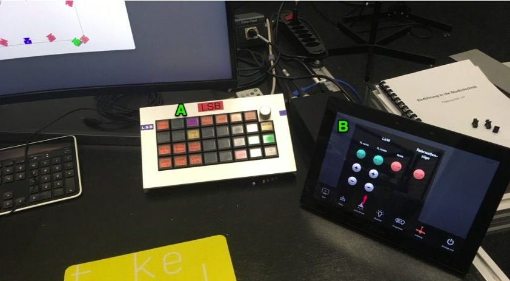
A: The LSB is the control panel for routing and controlling all audio components. B: The Extron panel provides convenient management of all video and power components.
Hint: To dock in the composition studio with your own laptop, you need to consider a two steps! Install the necessary drivers for audio & video: - RME Madi USB Driver (Mac / Windows ) for the audio connection. - DisplayLinker for the video connection Please have a look at this link: Quick Start
The ‘LSB panel’ operates in two different levels (layouts):
LSB (First Layout)
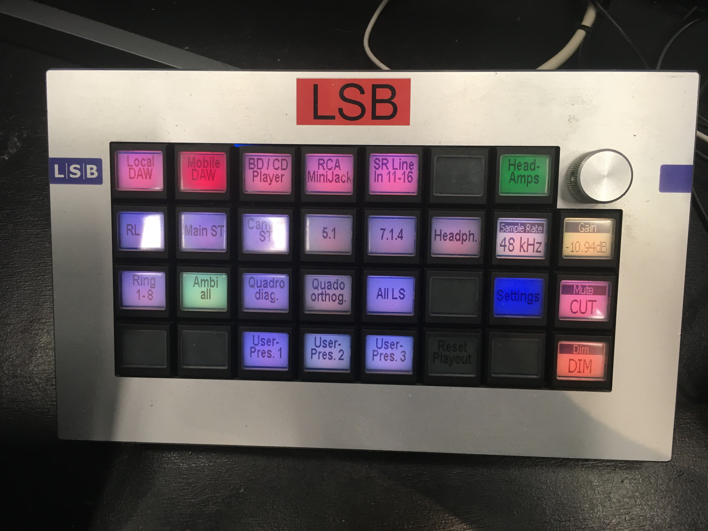
Figure. shows LSB Layer 1The picture shows the sources in the first LSB line; you can select the speaker settings directly in the second and third lines. If you choose ‘ALL LS,’ all speakers are available, and you can route them in RME Totalmixer or directly in the DAW.
To switch to the second layout with the ‘Sources’ –> press the ‘Setings’ button.
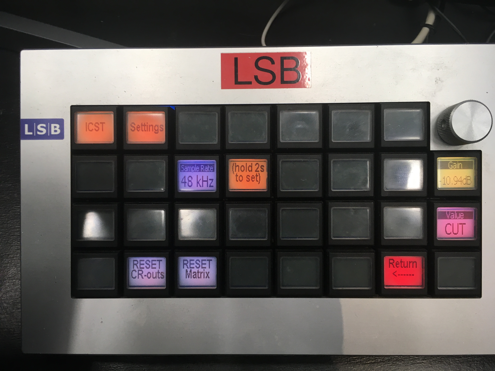
Figure. shows LSB Layer 2Speaker Settings at the ICST-Kompositionsstudio:
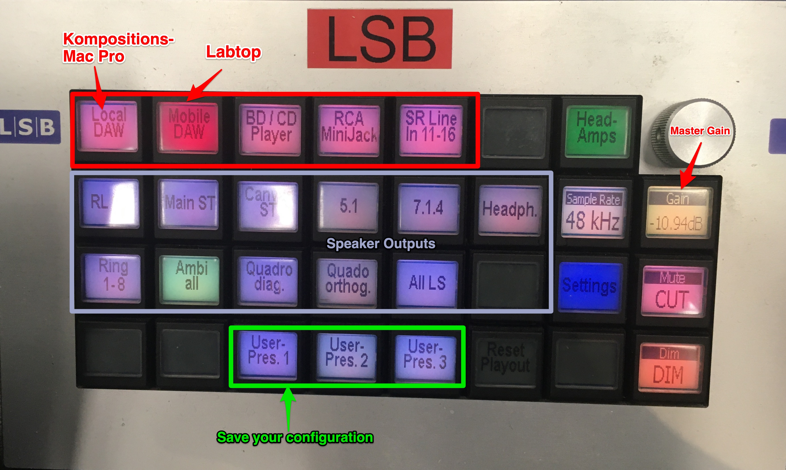
Speaker Settings
LSB: Mic-Amp setting:
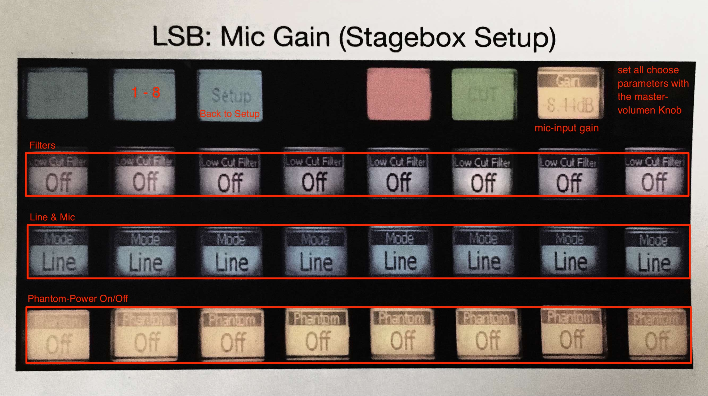
The Extron touchscreen panel for Video
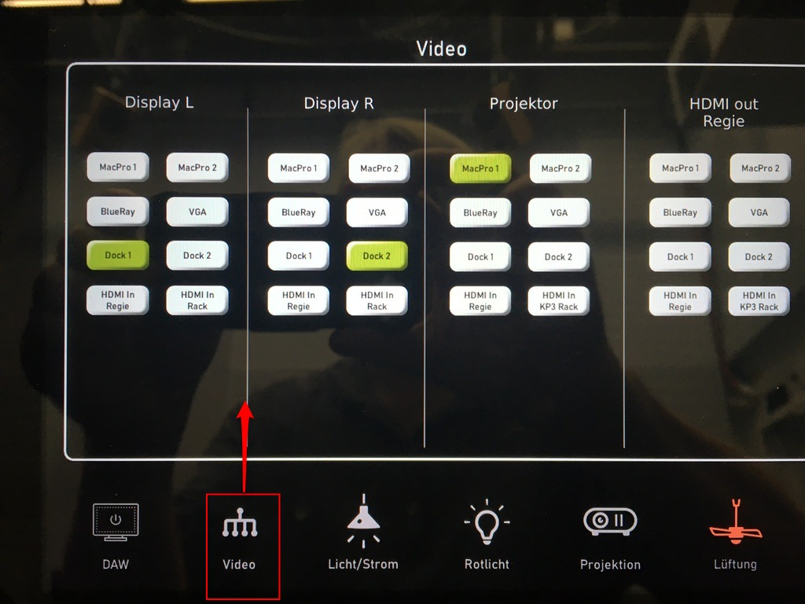
Image shows as an example the ‘video switching layout’.
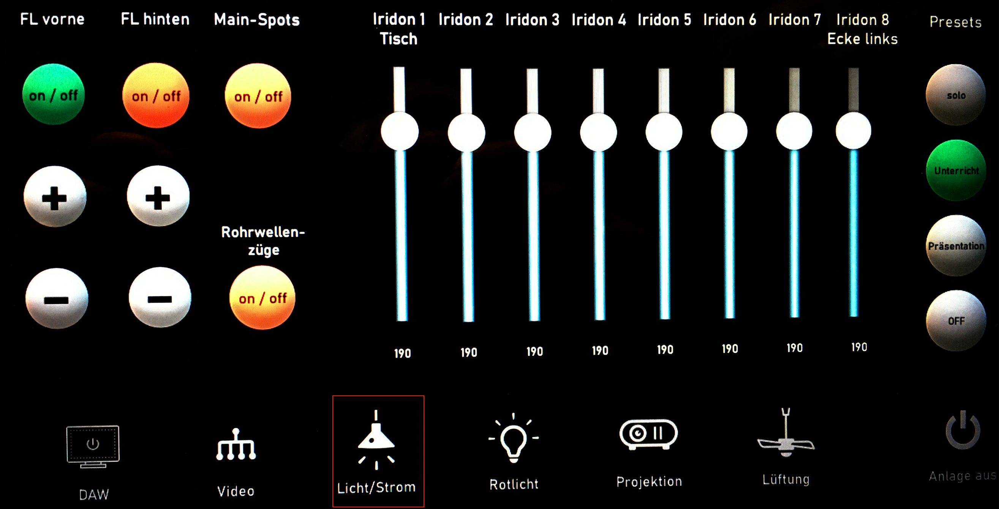
Image shows the touch-panel layout ’light’.Additional hubs and hardware are available behind the screen:
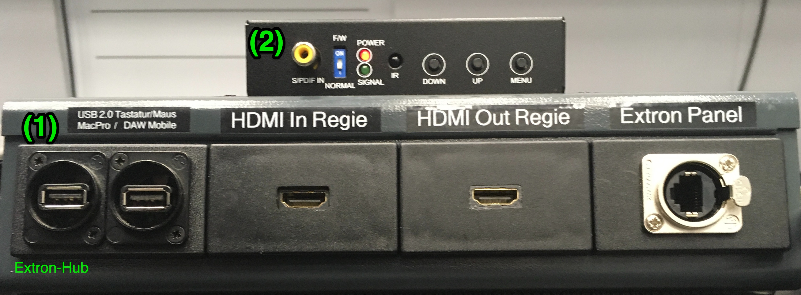
-
(1) the “Extron Hub” behind the curved screen provides the interfaces for additional video connections as well as the Extron panel.
-
(2) PureTools (converter) video VGA input for PC - laptop.!
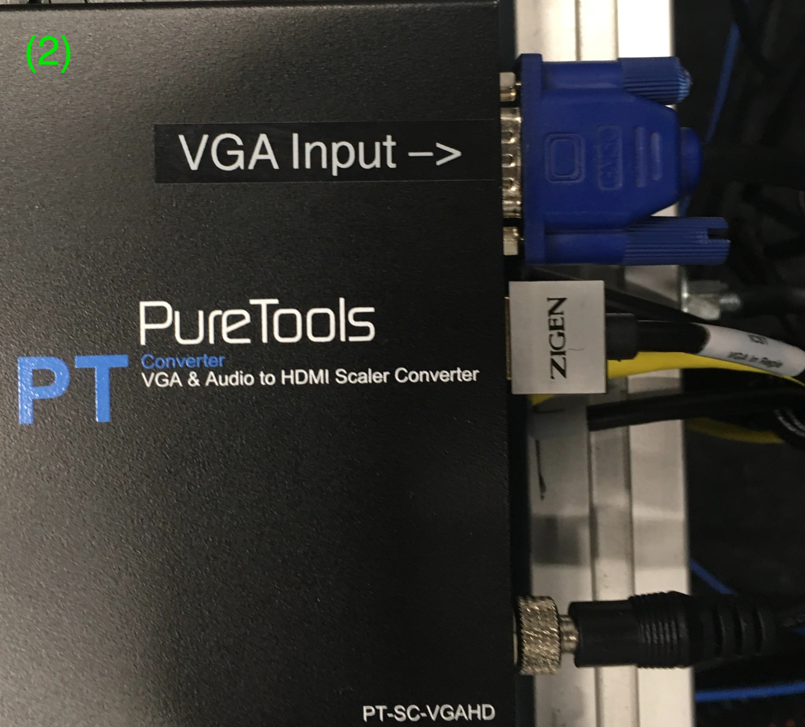
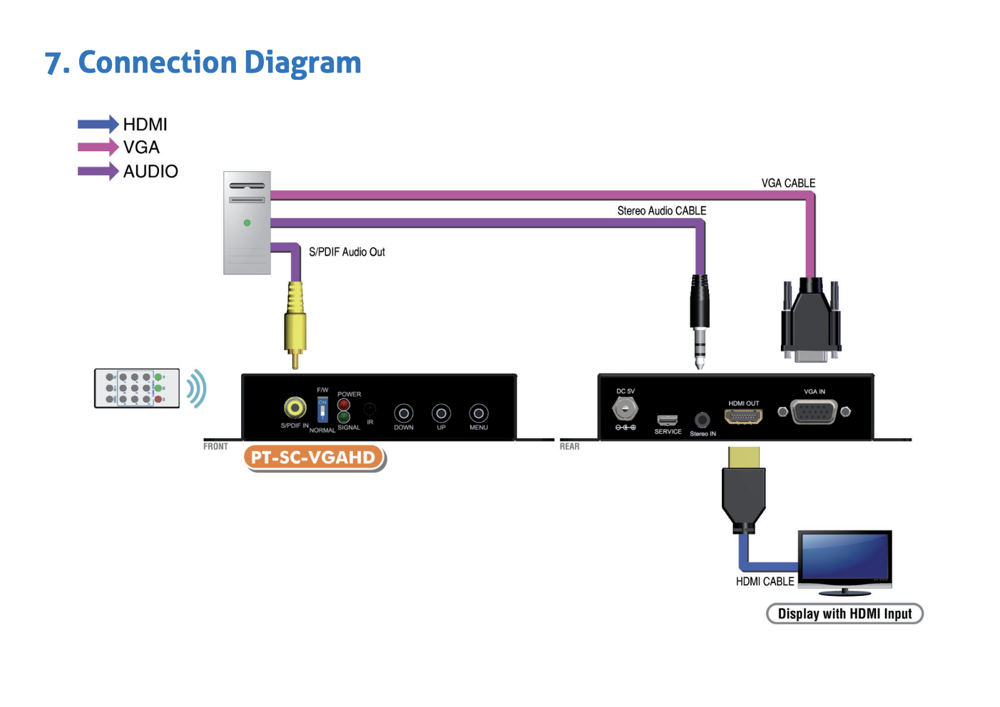
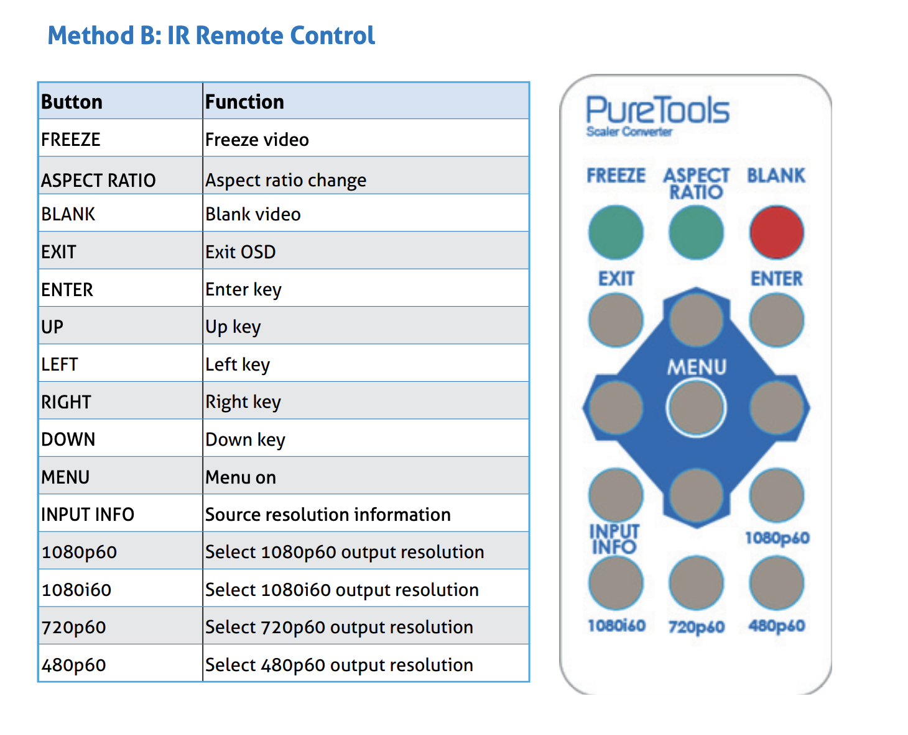
-
On the table is remote control for all settings of PureTools PT-SC-VGAHD Documentation: PureTools PT-SC-VGAHD
-
Lake People (Stereo Balanced Amplifier) for direct connection of the Mac.
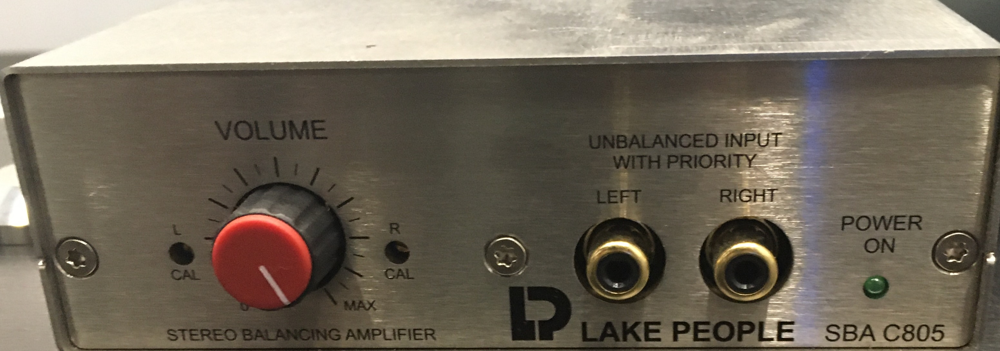
-
Lake People (Phone Amplifier) for 2x headphone monitoring.!
-
Headphone:
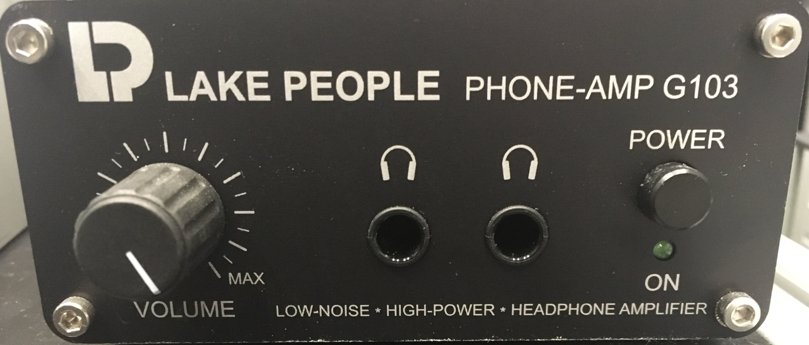
Lake People (Phone Amplifier) for 2x headphone monitoring.
DisplayLink
The Targus USB-C Docking station can now connect two SSD HDs via USB-C in addition to the fixed connections.
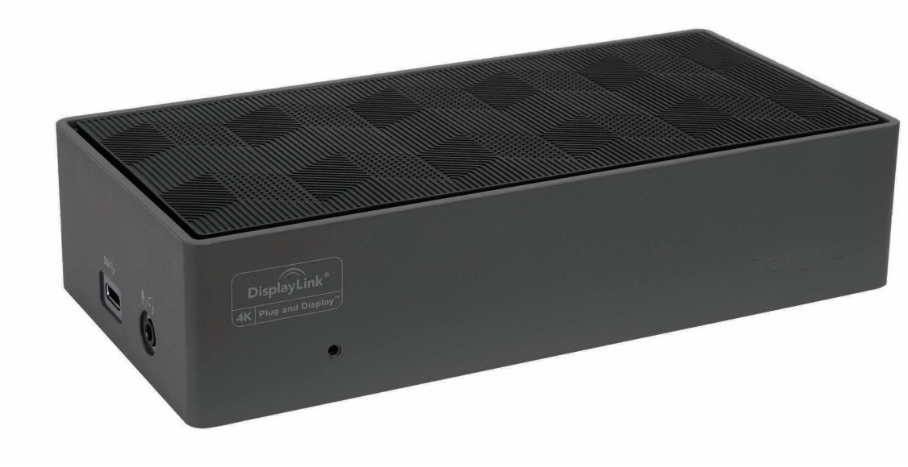
Image: DisplayLink front/side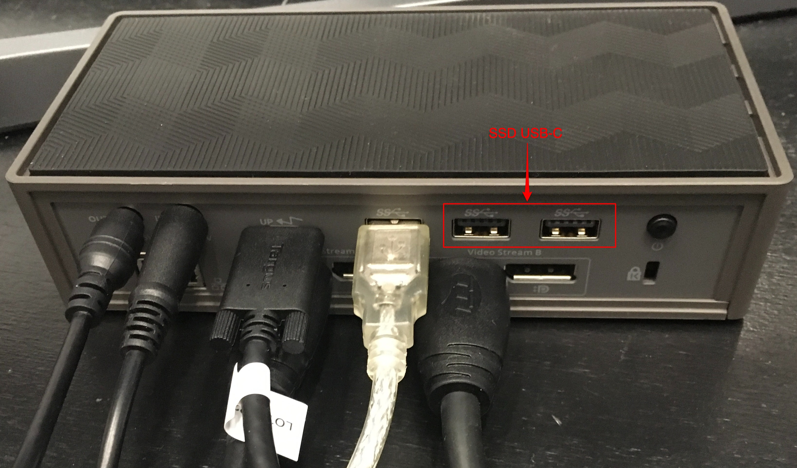
Image: DisplayLink Back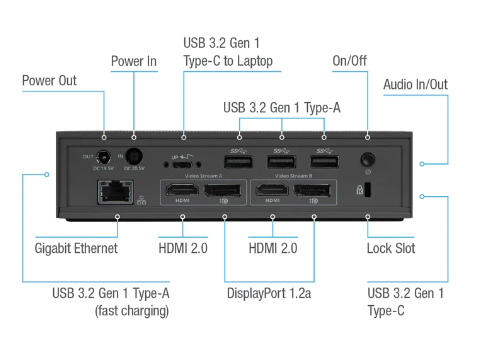
Image: DisplayLink ConnectorsATTENTION: To use the video features of the ‘Targus Docking station’ the ‘DisplayLink’ driver must be installed!
Download [DisplayLink] Driver!
- The Apple Labtop can be easily connected via USB-C (3.2) or USB -A (3.2).
 8. Logitech Keyboard & Mouse
8. Logitech Keyboard & Mouse
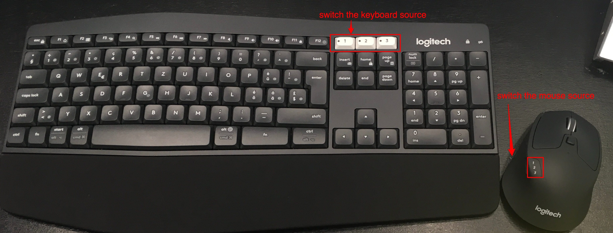
You can now conveniently switch the keyboard and mouse to their respective sources.
- 1 –> MacPro Studio
- 2 –> Laptop / Pc
2025@ICST